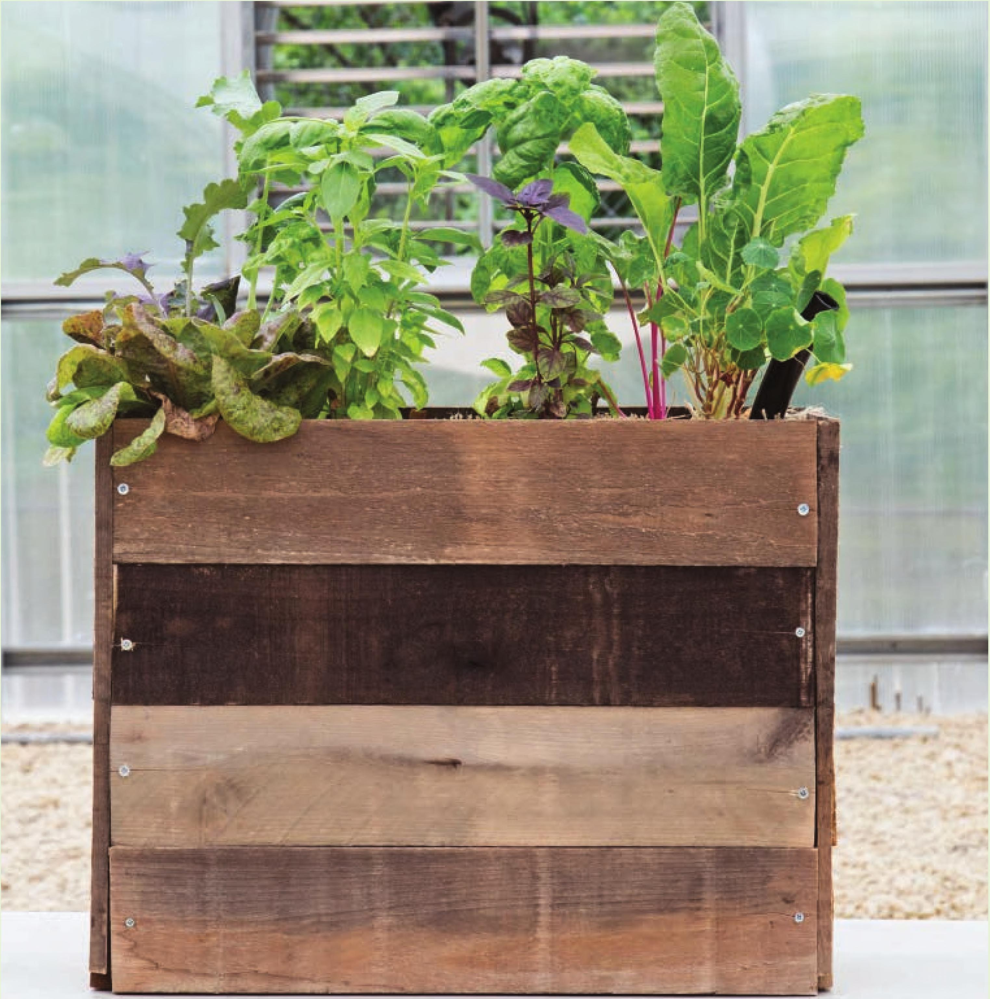

GROWING SYSTEM WICKING BED WICKING BED GARDENS ARE VERY versatile and can be modified for a variety of substrates, fertilizers, and crops. Similar to the previous hydroponic gardens in this chapter, the wicking bed garden requires no electricity. The design is incredibly simple. Wicking beds take advantage of capillary action, a natural phenomenon by which water can flow upward against gravity by using its surface tension and adhesion. A common example is a paper towel wicking water upward from a cup. In a wicking bed garden, the “cup” is the frame of a raised bed garden and the “paper towel” is a finetextured substrate like coco, peat, or soil. • Suitable Locations: Outdoors or greenhouse; can be modified for indoors • Size: Small to large • Growing Media: Expanded clay pellets and coco coir chips • Electrical: Not required • Crops: Leafy greens, herbs, strawberries, and short flowering crops 60 DIY HYDROPONIC GARDENS
